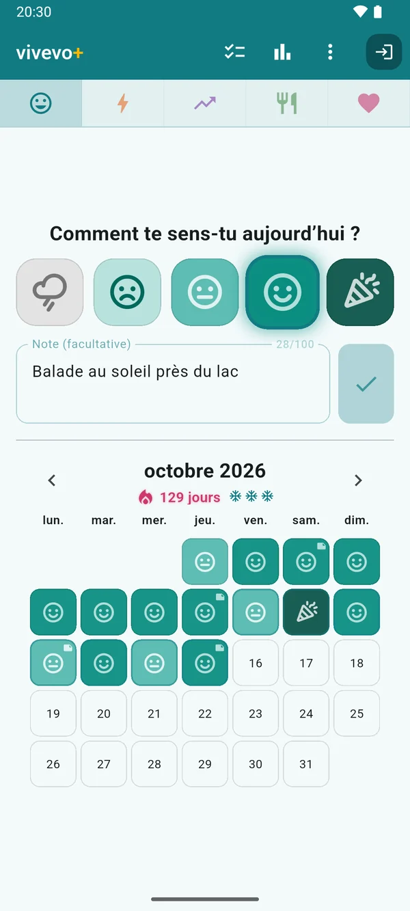
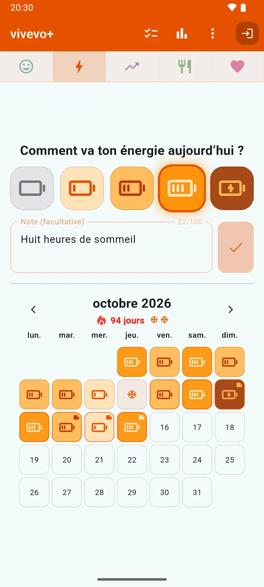
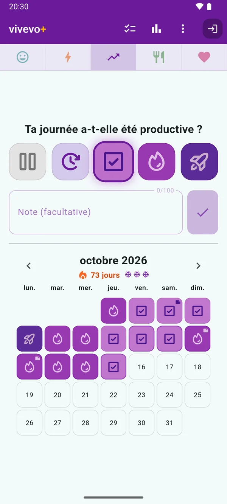
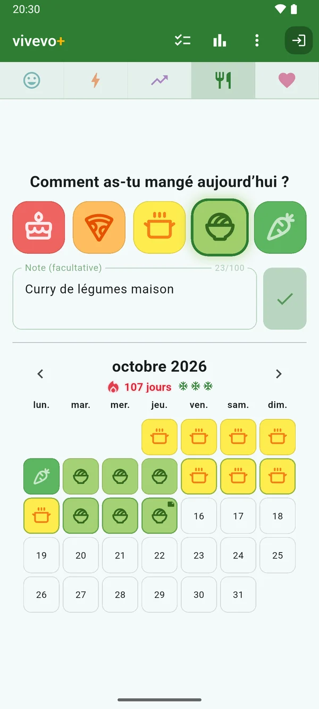
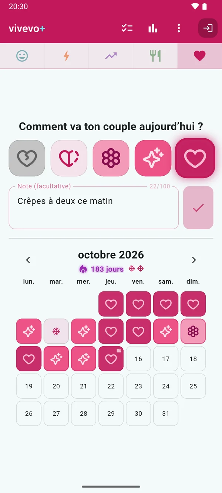
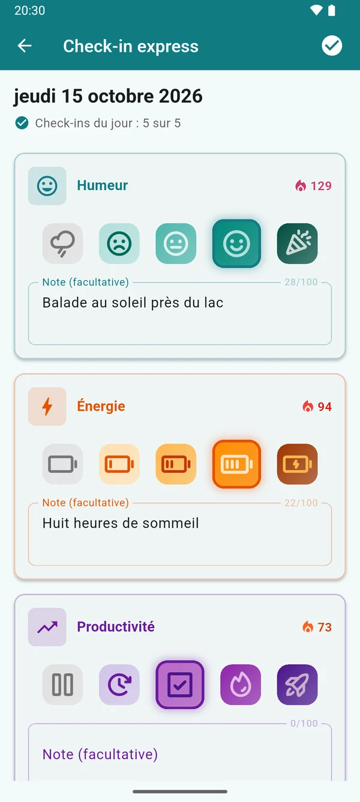
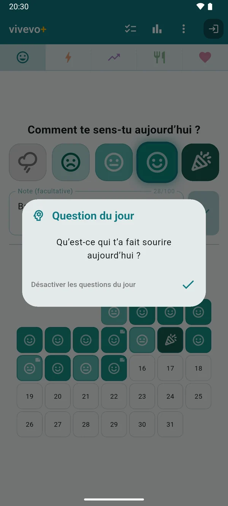
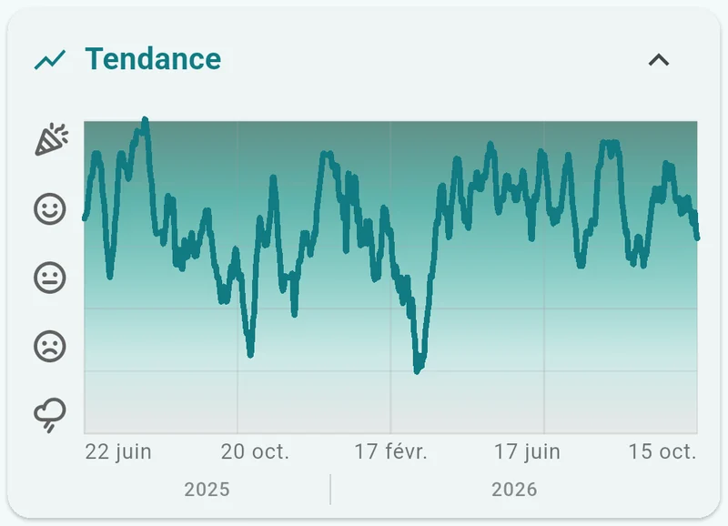
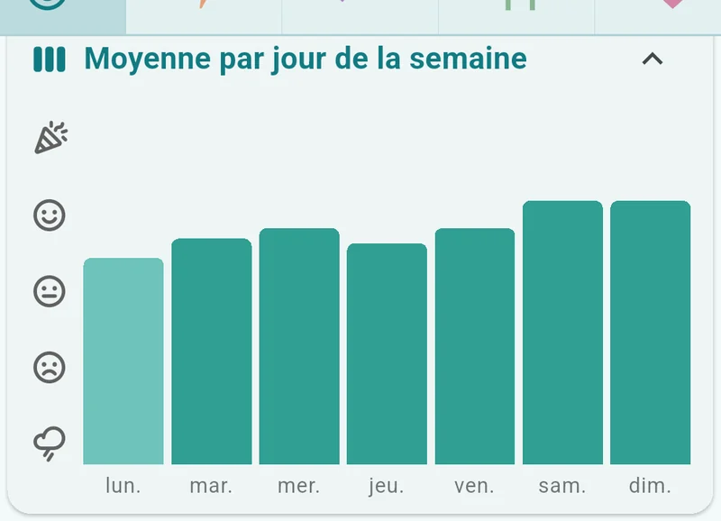
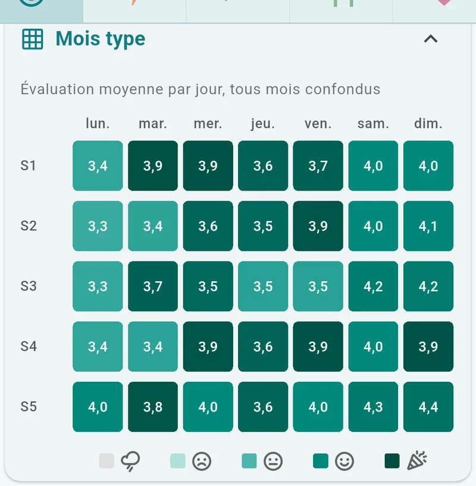

Comment ça va ?
vivevo est ton journal d’humeur en un geste par jour, pour les cinq domaines qui façonnent ta journée : humeur, énergie, productivité, alimentation et couple.
Cinq secondes de sincérité par jour.
Disponible sur Google PlayGratuit · Android · Sans pub · Français, English, Deutsch & Español

Un geste sincère par jour.
Pas de chiffres à saisir, pas de longs textes à rédiger. Tu choisis l’image qui correspond à ta journée, et c’est tout.
-
ÉTAPE 1
Réponds à une question
Comment s’est passée ta journée ? Appuie sur l’une des cinq images. Ajoute une petite note quand la journée le mérite.
-
ÉTAPE 2
Regarde ton mois se remplir
Chaque jour devient une case colorée. Les séries grandissent, et pardonnent un jour manqué de temps en temps.
-
ÉTAPE 3
Découvre tes rythmes
Quelques semaines plus tard, le tableau se dessine : ce qui illumine tes journées, et ce qui les assombrit.
Pourquoi un seul geste ?
Parce que le plus dur, c’est d’en faire une habitude. Un check-in de cinq secondes résiste aux semaines chargées, aux jours de maladie et aux vacances, et une évaluation sincère chaque jour vaut mieux qu’une entrée détaillée une fois par mois. Les rythmes n’apparaissent que si les données continuent d’arriver.
Quand tu as plus à dire, il y a la note. Sinon, un geste suffit pour une entrée complète.
Cinq pétales, cinq domaines.
Regarde bien le logo : ses cinq pétales sont les cinq domaines que suit vivevo. Chaque domaine a sa propre échelle en cinq niveaux, en images plutôt qu’en chiffres.

-
Humeur
nuage de pluie → confettis
-
Énergie
batterie vide → en charge
-
Productivité
en pause → décollage de fusée
-
Alimentation
gâteau → carotte
-
Couple
cœur brisé → cœur entier
Humeur 
Énergie 
Productivité 
Alimentation 
Couple
Tu peux suivre un seul domaine ou les cinq : chacun a sa propre série, son calendrier et ses graphiques, et toute l’appli prend la couleur du domaine où tu te trouves.
Une série qui pardonne.
La régularité doit encourager, pas sembler fragile. vivevo est conçu pour t’aider à continuer, tout en douceur.
La flamme ne cesse d’évoluer.
La plupart des compteurs de série ne sont qu’un chiffre. La flamme de vivevo change de couleur pendant cinq cents jours, et se met à rayonner dès le jour 30.
Et un jour pas encore évalué ne met jamais fin à la série : on laisse d’abord la journée se terminer.
-
Gels de série automatiques
Un jour manqué ? vivevo utilise un gel pour le couvrir, sans que tu aies rien à faire. Les gels se renouvellent chaque mois.
-
Des rappels bien élevés
Un petit rappel par jour, seulement si tu n’as pas encore fait ton check-in. Et si tu décroches un moment, il continue, discrètement.
-
Question du jour
Une petite réflexion qui sait l’heure qu’il est : « Qu’est-ce qui va te faire sourire aujourd’hui ? » devient « Qu’est-ce qui t’a fait sourire aujourd’hui ? » l’après-midi.
-
Check-in express
Les cinq domaines sur un seul écran, directement depuis la notification de rappel.

Check-in expressTous les domaines que tu suis, sur un seul écran. 
Question du jourFormulée selon le moment de la journée.
Des rythmes enfin visibles.
Six graphiques, la période de ton choix, une seule question : qu’est-ce qui influence vraiment tes journées ?



Tes données, tes règles
vivevo fonctionne entièrement en mode invité : tout reste sur ton appareil, séries et gels compris. Connecte-toi avec Google, et tes entrées sont sauvegardées et synchronisées en temps réel entre tes appareils ; les modifications faites hors ligne sont mises en attente, puis fusionnées en toute sécurité.
Tes données restent à toi : exporte tout en CSV, ou supprime ton compte et toutes tes données depuis l’appli, à tout moment.
vivevo+ : les cinq domaines à la fois, tout ton historique, trois gels de série par mois, des notes plus longues et l’export CSV. Au mois, à l’année ou à vie.
La version gratuite n’est pas une démo : un domaine à la fois, 28 jours d’historique et un gel par mois, gratuitement et pour toujours.
Comment ça va ?
Découvre-le, jour après jour.
Disponible sur Google Play
Gratuit · Android · Sans pub · Français, English, Deutsch & Español